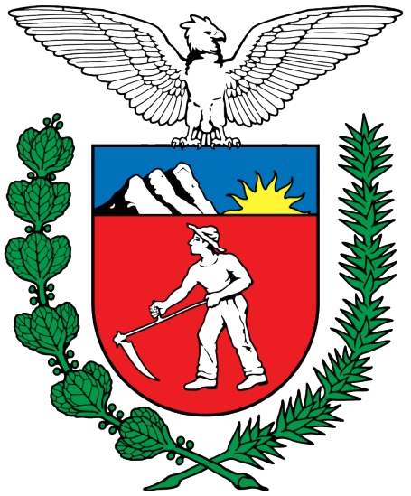
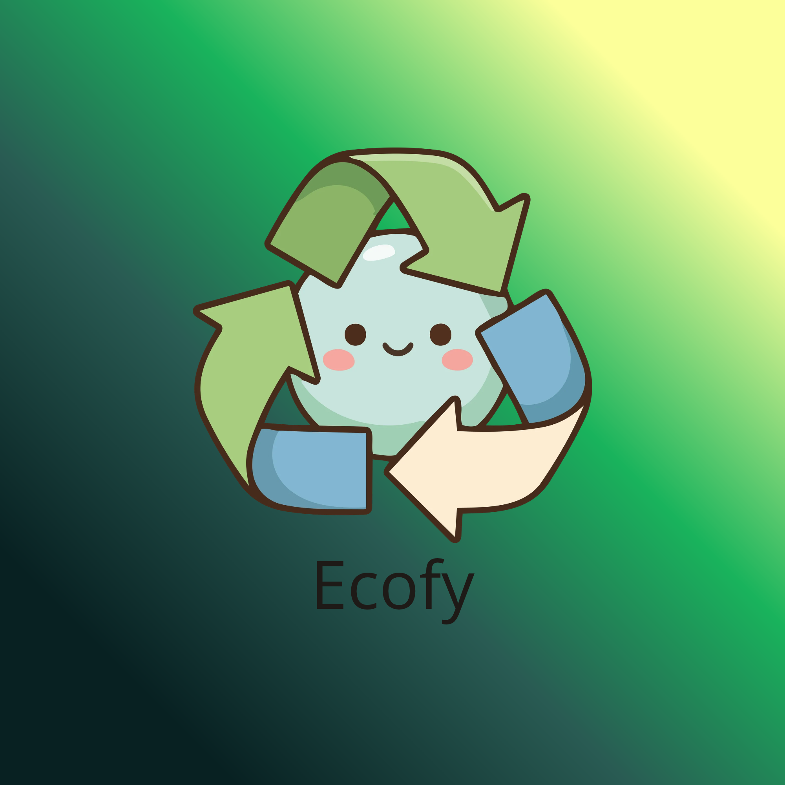

Plataforma para Descarte Correto de Resíduos
Tornando a reciclagem simples, rápida e acessível para todos.
♻️ Começar a reciclar

Tornando a reciclagem simples, rápida e acessível para todos.
♻️ Começar a reciclarNossa iniciativa consiste no desenvolvimento de uma plataforma digital focada em orientar os cidadãos sobre a destinação correta de materiais recicláveis e resíduos especiais. O sistema permite que o usuário identifique o componente de forma automatizada através de uma fotografia ou por meio de busca textual pelo nome do objeto.
Após o reconhecimento do material, o ambiente digital exibe instruções precisas de manejo e mapeia os pontos de coleta credenciados mais próximos, como ecopontos e cooperativas. Para impulsionar o engajamento contínuo, a plataforma conta com um sistema de pontuação e atividades educativas voltadas para a rotina da comunidade.
Muitas pessoas não sabem como descartar resíduos comuns e especiais (como eletrônicos, pilhas e óleo de cozinha). A falta de informação faz com que esses materiais recicláveis sejam direcionados ao lixo comum, provocando a poluição do solo, da água e do ar, além de inviabilizar o trabalho das cooperativas de reciclagem.
O aplicativo elimina a barreira do desconhecimento ao automatizar a identificação do lixo. Ele entrega respostas visuais imediatas sobre o descarte e conecta diretamente o cidadão aos ecopontos da região. O sistema de pontos transforma a prática sustentável em um hábito dinâmico e recompensador.
Digite o resíduo que você deseja descartar e descubra a forma correta de fazer isso.
Encontre locais adequados para entregar seus resíduos e contribuir com o descarte correto.
Pesquise um resíduo para encontrar pontos de coleta em Foz do Iguaçu.
O projeto está em fase de planejamento e levantamento de requisitos. Clique abaixo para apoiar a ideia ou sugerir novos pontos de coleta.
Quero Apoiar o Projeto